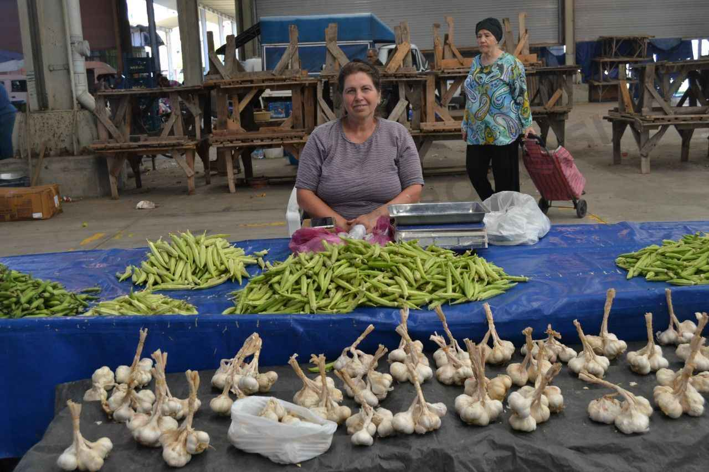
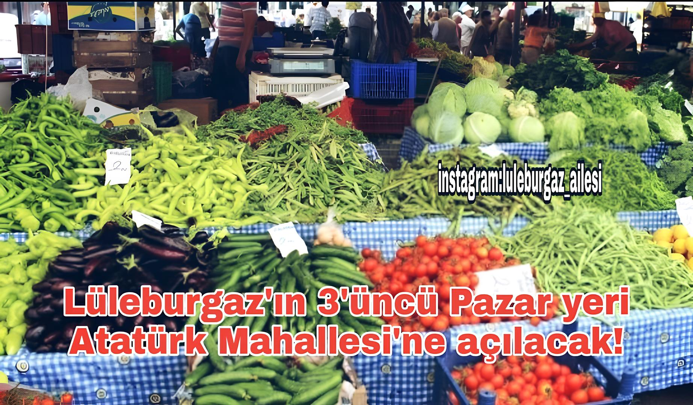

Lüleburgaz Belediyesi Yerel Pazar Ağı
Lüleburgaz Belediyesi olarak, şehrimizin yerel üreticilerini desteklemek ve onların ürünlerini daha geniş kitlelere ulaştırmak amacıyla bu projeyi hayata geçirdik. Amacımız, yerel ekonomiyi canlandırmak, üreticilerimize dijital dünyada güçlü bir varlık kazandırmak ve tüketicilere güvenilir, doğal ürünlere kolayca ulaşabilecekleri bir platform sunmaktır.
Bu proje, yerel üreticilerimizin ürünlerini tanıtmaları ve satışlarını artırmaları için tasarlanmış bir dijital pazar yeri olarak hizmet verecek. Hem üreticiler hem de tüketiciler için kullanıcı dostu bir deneyim sunmayı hedefliyoruz. Üreticiler, ürünlerini bu platform üzerinden kolayca sergileyebilir ve satışa sunabilirken, tüketiciler de güvenli ve hızlı bir şekilde alışveriş yapma imkanı bulacak.
Öne Çıkanlar

Pazarımızın yıldızlarından biri olan Meral Teyze, ürünlerinin kalitesiyle dikkat çekiyor. Mısır ve sarımsakları, doğal yöntemlerle yetiştirilmiş ve pazara taze olarak getirilmiş. Teyze'nin ürünleri, hem lezzet hem de besin değeri açısından üstün kalitede. Pazara uğradığınızda, bu harika ürünleri mutlaka denemelisiniz!
Haberler
